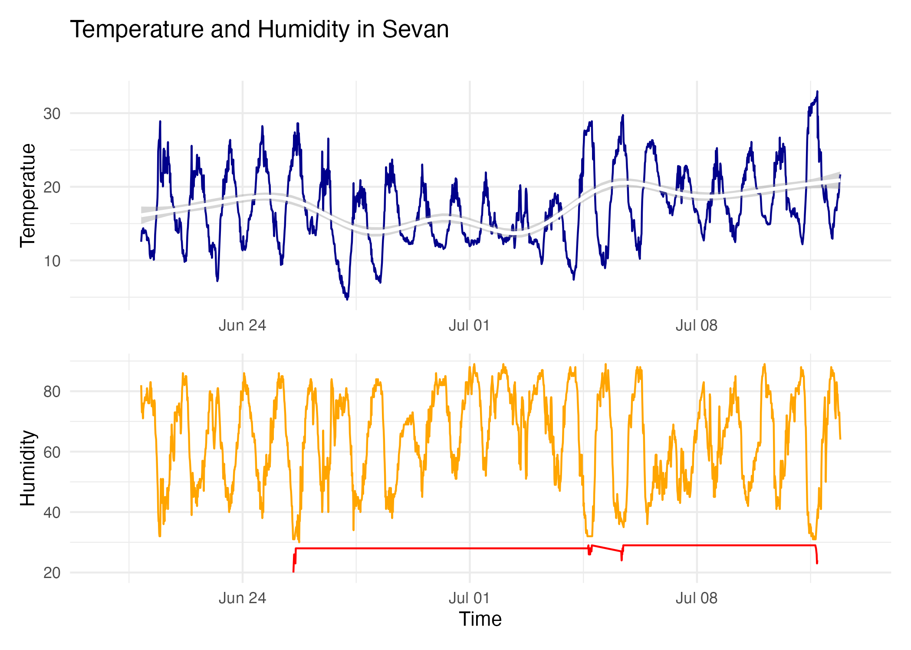
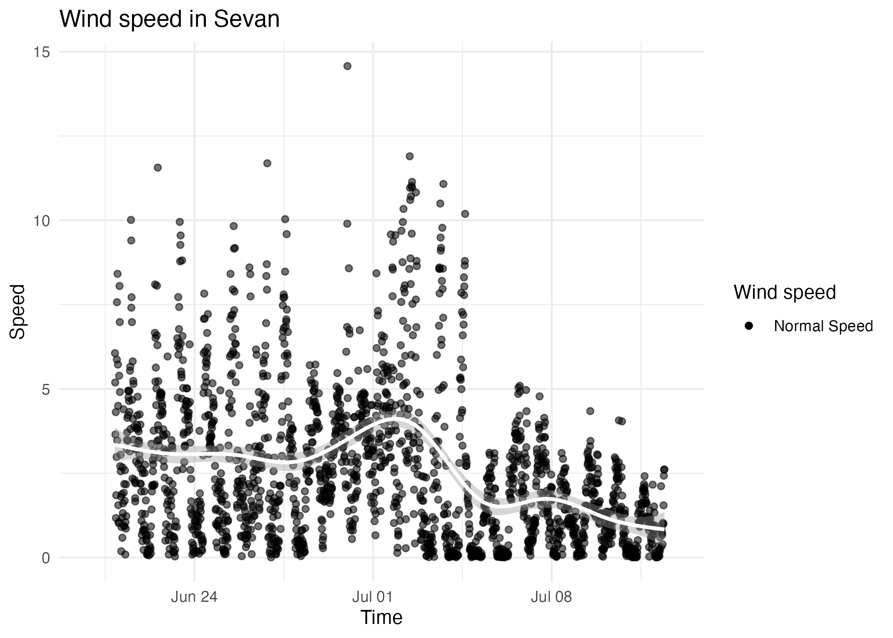
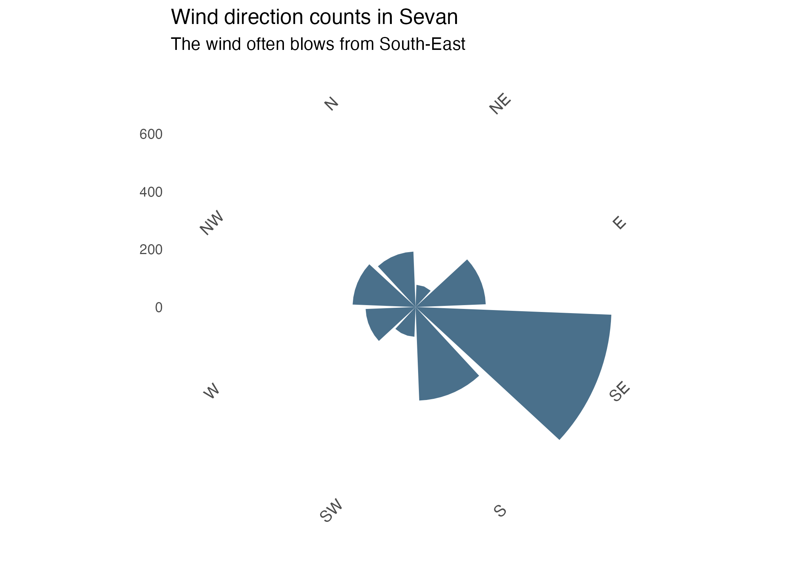

Sevan
Sevan is a town in Armenia, located in the Sevan Municipality of the Gegharkunik Province on the northwestern shores of Lake Sevan.
Fire causes and risk
Now we will explore the fire causes probability in Sevan, going through data provided by Tumo Climate Net. The main climate features that can cause fire are temperature and humidity. The fire cause probability is higher when the temperature is high and humidity is low. The graph below represents the temperature and humidity flow during June-July 2024.
Humidity level is considered to be low when lower than 30 percents. The graph below represents the humidity level in Sevan when the temperature is above 30 C (June-July 2024).
Predicting the spread of fire
We never know when and where will start the fire, so predicting the fire spreading speed and direction would be helpful to put it out. In the graph below you can see the wind speed during June-July 2024. As you can see, there is not much danger.

It is important to predict the direction of fire spread as well. Here is a chart representing the count of each of wind direction. As you can see, the wind often blows from South-East.

Conclusion of Sevan area
According to the data we explored, Sevan is not that hot and dry place, and fire cause probability is normal. The average temperature in Sevan in June-July is about 17.2 C, and the average humidity is about 64.2%, which is considered normal.
Wind speed is not that high, and it usually blows from South-East, so the fire probably spreads to North-West.